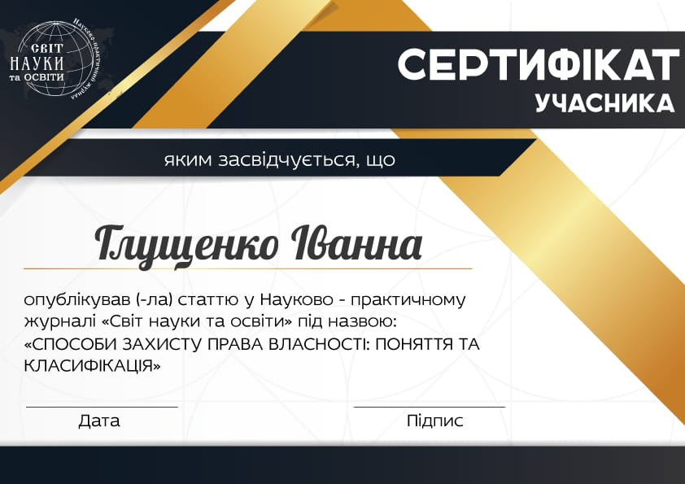

Напрямки
Юридичні науки:
| 12.00.01 |
теорія та історія держави і права;
історія політичних і правових учень; |
| 12.00.02 |
конституційне право; муніципальне право |
| 12.00.03 |
цивільне право та цивільний процес; сімейне право; міжнародне приватне право; |
| 12.00.04 |
господарське право; господарсько-процесуальне право; |
| 12.00.05 |
трудове право; право соціального забезпечення; |
| 12.00.06 |
земельне право; аграрне право, екологічне право; природоресурсне право; |
| 12.00.07 |
адміністративне право і процес, фінансове право; інформаційне право |
| 12.00.08 |
кримінальне право та кримінологія; кримінально-виконавче право |
| 12.00.09 |
кримінальний процес та криміналістика; судова експертиза; оперативно-розшукова діяльність; |
| 12.00.10 |
судоустрій; прокуратура та адвокатура; |
| 12.00.11 |
міжнародне право. |
Інші напрямки:
| 07.00.00 |
Iсторичнi науки |
| 08.00.00 |
Економiчнi науки |
| 09.00.00 |
Фiлософськi науки |
| 10.00.00 |
Фiлологiчнi науки |
| 13.00.00 |
Педагогiчнi науки |
| 19.00.00 |
Психологiчнi науки |
| 22.00.00 |
Соцiологiчнi науки |
| 23.00.00 |
Полiтичнi науки |
| 25.00.00 |
Державне управління |
| 26.00.00 |
Культурологія |
| 27.00.00 |
Соціальні комунікації |
Вимоги щодо змісту та оформлення роботи:
| Формат статті |
A4, орієнтація - книжкова, матеріали збережені та підготовлені у форматі Microsoft Word (*.doc або *.docx) |
| Поля всі сторони |
- 2 см |
| Основний шрифт |
Times New Roman |
| Розмір шрифту основного тексту |
14 пунктів |
| Міжрядковий інтервал |
полуторний |
| Вирівнювання тексту |
по ширині |
| Автоматична розстановка переносів |
включена |
| Абзацний відступ (новий рядок) |
1,25 см |
| Нумерація сторінок |
не ведеться |
| Посилання на літературу |
у квадратних дужках по тексту [1, с. 2], бібліографічний список в кінці тексту. Посторінкові виноски та посилання не допускаються |
| Обсяг |
від 5 до 20 сторінок включно |
Скачати інформаційний лист
Вимоги до змісту статті
• Статті мають містити такі необхідні елементи (з виділенням по тексту статті): - постановка проблеми у загальному вигляді та її зв'язок із важливими науковими чи практичними завданнями;
• - виклад основного матеріалу дослідження з повним обґрунтуванням отриманих наукових результатів;
• - висновки з даного дослідження і перспективи подальшого розвитку в цьому напрямку.
• Автори, які подали матеріали для публікації, погоджуються з наступними положеннями: - відповідальність за достовірність поданої інформації в своїй роботі несе автор. - автори зберігають за собою всі авторські права і одночасно надають журналу право першої публікації, що дозволяє поширювати даний матеріал із зазначенням авторства та первинної публікації в даному журналі.
Структурні елементи наукової статті
• індекс УДК (у верхньому лівому кутку сторінки);
• прізвище та ініціали автора (-ів), місце роботи (навчання), вчений ступінь, вчене звання, посада – двома мовами на вибір (українською або російською та англійською для індексу цитованості робіт в всесвітній мережі інтернет та науково-метричних базах Світу);
• назва статті - двома мовами (українською або російською та англійською);
• анотації (мінімум 3 речення) та ключові слова (мінімум 5 слів) - двома мовами (українською або російською та англійською);
• текст статті може бути українською, російською, англійською.
• список літератури.
• JUNIOR - Після списку літератури зазначається прізвище та ініціали наукового керівника/консультанта (курсивом, вирівнювання по правому краю), а також прикріплюється скан-копія рецензії із завіренням підпису наукового керівника.
ОБОВ’ЯЗКОВО НАДАЄТЬСЯ ІМ’Я ТА ПРІЗВИЩЕ АВТОРА (-ІВ) АНГЛІЙСЬКОЮ МОВОЮ ВІДПОВІДНО ДО ЗАКОРДОННОГО ПАСПОРТУ АБО ІНШОГО ОФІЦІЙНОГО ДОКУМЕНТУ.
Це обумовлено необхідністю вірного єдиного написання ім’я та прізвища автора (-ів) в усіх його публікаціях з метою коректного визначення індексу цитування.
ВИМОГИ ЩОДО ОФОРМЛЕННЯ ЛІТЕРАТУРИ
• Список використаних джерел подається наприкінці роботи і відповідно до стандартів бібліографічного опису, включаючи нормативно-правові акти.
• Посилання на джерела необхідно робити у тексті в квадратних дужках із зазначенням номерів сторінок відповідно джерела. Наприклад, [1, с. 12]. Список використаних джерел подається наприкінці статті в порядку згадування джерел відповідно до стандартів бібліографічного опису (див.: стандарт «Бібліографічний запис. Бібліографічний опис» (ДСТУ 7.1:2006 та Форма 23, затверджена наказом ВАК України від 29 травня 2007 року № 342);
• В тексті роботи не повинно бути переносу слів та макросів. Малюнки, схеми, таблиці тощо розміщуються на окремій, останній сторінці, а не в тексті роботи.
Вимоги щодо оформлення заявки на участь
Скачати заявку
ІНША ОБОВ’ЯЗКОВА ІНФОРМАЦІЯ
Стаття має містити контактну інформацію авторів однією мовою: телефони (ніде не публікується) та e-mail (ніде не публікується) для можливості оперативного вирішення питань, які виникають. Адреси електронної пошти мають бути реальними (оскільки саме за цією адресою автор буде відомий серед науковців всього світу, зможе отримувати запрошення до участі в конференціях та інших наукових заходах тощо).
При наявності у статті двох та більше авторів, одного з них має бути вказано як контактну особу. Саме за його адресою електронної пошти редакція буде вести подальшу переписку (надсилати зауваження тощо).
Для авторів, які мешкають за межами м. Харкова, контактна інформація також має містити повну поштову адресу або № відділення Нової Пошти однією мовою для відправки авторського примірника журналу.
Практика розсилки свідчить, що журнали, відправлені за робочою адресою (на кафедру, відділ і т. п.), не завжди доходять саме до автора (-ів) статті. Тому редакція наполегливо рекомендує вказувати особисту адресу.
Умови оплати за публікацію в журналі
1. Оплата за публікацію в науково-практичному журналі «Світ науки та освіти» (The World of Science and Education) - розрахований на наукових та освітніх працівників, викладачів, вчителів та аспірантів та практикуючих фахівців.
Умови оплати
|
UAH |
| Публікація статті до 10 сторінок |
250,00 |
| Кожна наступна сторінка |
+20,00 |
| Доступ до електронної (pdf) версії журналу |
0 |
| Сертифікат в електронному (pdf) форматі, що підтверджує розміщення статті |
70,00 |
| Друкований екземпляр сертифікату, що підтверджує розміщення статті |
100,00 |
| Друкований екземпляр журналу |
150,00 |
Знижки. Для авторів, що публікуються повторно, передбачена знижка 10%. (Для отримання знижки необхідно, при подачі статті в примітках, вказати, що автор публікується повторно із посиланням на номер і сторінку публікації).
2. Оплата за публікацію в науково-практичному журналі «Світ науки та освіти» (The World of Science and Education) JUNIOR – розрахований на студентів та учнів 9-11 класів навчальних закладів I-III рівня акредитації.
Умови оплати
|
UAH |
| Публікація статті до 5 сторінок |
150,00 |
| Кожна наступна сторінка |
+20,00 |
| Доступ до електронної (pdf) версії журналу |
0 |
| Сертифікат в електронному (pdf) форматі, що підтверджує розміщення статті |
70,00 |
| Друкований екземпляр сертифікату, що підтверджує розміщення статті |
100,00 |
| Друкований екземпляр журналу |
150,00 |
Способи оплати:
1. Банкіський переказ.
2. Платіжні картки:
При оплаті замовлення банківською картою введення реквізитів картки відбувається в системі електронних платежів ПАТ КБ "ПриватБанк", який пройшов сертифікацію в платіжних системах Visa і MasterCard. Представлені Вами дані повністю захищені і ніхто, включаючи редакцію журналу, не може їх отримати.
Редакційний збір покриває витрати, пов’язані з редагуванням статей, макетуванням та оформленням журналу.
Реквізити для сплати оргвнеску: картковий рахунок: 5169 3305 0708 2482 ПАО КБ «Приватбанк» для розрахунку через ПРИВАТБАНК
Поточний рахунок: 26000052213488для розрахунку через інші банківські системи Отримувач: Нанарова Ольга Олександрівна
При сплаті внеску у відділеннях ПАТ КБ «ПриватБанк» чи за допомогою Приват24 достатньо вказати картковий рахунок: 5169 3305 0708 2482 та П.І.Б. одержувача: Нанарова Ольга Олександрівна.
Призначення платежу: оплата за публікацію П.І.Б. автора роботи.
При сплаті внеску у відділеннях інших банків чи за допомогою електронних систем переказу коштів необхідно вказати такі дані:
Банк одержувача: ЗАТ КБ «ПриватБанк»
МФО банка одержувача: 305299
КОД ОКПО банку: 14360570
Рахунок отримувача: 5169 3305 0708 2482
П.І.Б. одержувача: Нанарова Ольга Олександрівна
Призначення платежу: оплата за публікацію П.І.Б. автора роботи.
Авторам з інших держав необхідно оплатити редакційний збір за допомогою міжнародної системи грошових переказів – Western Union. Оплату необхідно здійснити на Нанарову Ольгу Олександрівну (Відп. секретаря журналу).
ЗРАЗОК

Умови та порядок прийняття робіт
Умови публікації статей
1. Ви заповнюєте заявку на публікацію роботи та фото автора у форматі Jpg;
2. Надсилайте нам статтю та квитанцію про сплату вартості публікації статті. Обов'язково в темі листа вкажіть розділ журналу, в якому ви бажаєте опублікувати статтю. Адреса електронної пошти редакції — wse@nlu.edu.ua
3. Редакція рецензує вашу статтю протягом 7-10 днів.
4. Якщо стаття успішно пройшла рецензування, ми відправляємо вам лист з інформацією:
«Стаття пройшла рецензування, прийнята до публікації».
5. Як тільки електронна версія журналу розміщується на сайті, ми повідомляємо вам про це. Потім, після виходу журналу з друку, ми відправляємо вам друкований примірник.
ПІДСТАВИ ДЛЯ ВІДМОВИ В РОЗГЛЯДІ СТАТТІ
1. Відсутність або неповнота будь-якої складової даних про автора (українською або російською та англійською мовою).
2. Відсутність контактної інформації.
3. Відсутність або неповнота поштової адреси чи нової пошти (тільки для авторів, які мешкають за межами м. Харкова).
4. Відсутність рецензії (рекомендації, відгуку) наукового керівника, засвідчені підписом та печаткою (тільки для авторів, які не мають наукового ступеня).
5. Відсутність УДК (для осіб, які мають науковий ступінь).
6. Відсутність списку використаних джерел.
7. Недостатній обсяг статті (менше 5 сторінок).
8. Стаття вже була опублікована в іншому виданні (включаючи електронні видання та мережу Інтернет).
9. Виявлення у статті плагіату.
10. Порушення правил цитування.
Додаткова інформація: Стаття, подана до редакції без дотримання вимог, наведених у пунктах 1–10, опублікуванню не підлягає. Гонорар за публікацію не повертається. Редакція залишає за собою право на рецензування, редагування, скорочення і відхилення статей. За зміст та достовірність наданої інформації відповідальність несе автор. Передрук опублікованих матеріалів журналу здійснюється тільки з дозволу автора і редакції.
Засади, якими повинен керуватися автор наукових публікацій
Автор (або колектив авторів) усвідомлює, що несе первісну відповідальність за новизну і достовірність результатів наукового дослідження, що передбачає дотримання таких принципів:
• автори статті повинні надавати достовірні результати проведених досліджень. Завідомо помилкові або сфальсифіковані затвердження неприйнятні.
• автори повинні гарантувати, що результати дослідження, викладені в наданій рукописи, повністю оригінальні. Запозичені фрагменти або твердження повинні бути оформлені з обов'язковим зазначенням автора і першоджерела. Надмірні запозичення, а також плагіат в будь-яких формах, включаючи неоформлені цитати, перефразування або присвоєння прав на результати чужих досліджень, неетичні і неприйнятні.
• автори не повинні надавати в журнал рукопис, яка була відправлена в інший журнал і знаходиться на розгляді, а також статтю, вже опубліковану в іншому журналі.
• якщо автор виявить істотні помилки або неточності в статті на етапі її розгляду або після її опублікування, він повинен якнайшвидше повідомити про це редакцію журналу.
ЦИВІЛЬНЕ ПРАВО І ЦИВІЛЬНИЙ ПРОЦЕС
ФОТО
Петрова Вікторія Валентинівна
доктор юридичних наук, професор, доцент кафедри цивільного процесу, Національний юридичний університет імені Ярослава Мудрого, Україна, м. Харків
Petrova Vіktorіya Valentinivna
Doctor of Legal Sciences, Professor, Head of Civil Procedure Department, Yaroslav Mudryi National Law University, Ukraine, Kharkiv
УДК 661.65
ПИТАННЯ ЩОДО ЕФЕКТИВНОСТІ ДЕЯКИХ ПОЛОЖЕНЬ ЗАКОНОПРОЕКТУ ЕКОНОМІЧНОГО ПРОЦЕСУАЛЬНОГО КОДЕКСУ УКРАЇНИ
QUESTION OF CERTAIN PROVISIONS EFFICIENCY OF THE DRAFT OF THE ECONOMIC PROCEDURE CODE OF UKRAINE
Стаття присвячена аналізу проекту Економічного процесуального кодексу України, який оприлюднена для обговорення на сайті Ради (Рада) з питань судової реформи, яка є консультативно-дорадчим органом Президента України. Наукова стаття представляє авторську вказує на доцільність запровадження деяких інститутів комерційного процесуального права.
The article is devoted to the analysis of the Draft of the Economic Procedure Code of Ukraine which is published for discussion on the Council (Rada) Internet-site on the questions of judicial reform which is consultative and advisory body to the President of Ukraine. The scientific article presents the author’s points as for expediency of introducing some institutions of commercial procedure law.
Ключові слова: проект Економічного процесуального кодексу України; юрисдикція; докази та докази; ефективність процедурного права; апеляції до судових рішень; господарсько-процесуальне законодавство.
Keywords: Draft of the Economic Procedure Code of Ukraine; jurisdiction; evidence and proof; effectiveness of procedure law; appeals against court decisions; economic procedure legislation.
Вступ.
Основний ТЕКСТ роботи.
Висновок.
Список використаних джерел
1. Авраменко С. І. Стратегія конкурентоспроможності економіки України на основі інтеграційних систем – кластерів / С. І. Авраменко. – Київ: Видавництво ТОВ «Право», 2016. – 13 с.
...
12. Стратегічні виклики ХХІ століття суспільству та економіці України: В 3 т. / За ред. В. М. Гейця, В. П. Семіноженка, Б. Є. Кваснюка, Т. 3. – К.: Фенікс, 2007. – 556 с.
Наданий матеріал раніше не публікувався та в інші видання не надсилався.
Кінець прикладу.
Заявка на публікацію роботи
1. П.І.Б. автора роботи
2. Місце роботи (навчання), науковий ступінь, вчене звання, посада
3. Секція
4. Назва роботи (українською або російською та англійською)
5. Електронна адреса автора (дійсна)
6. Мобільний номер телефона автора
7. Яку версію журналу бажаєте отримати? (друковану або електронну)
8. Чи необхідний Вам сертифікат? (якщо так – друкований або pdf версія)
9. Яким чином хочете отримати журнал? (поштовим відправленням або Новою поштою)
10. Адреса на яку Вам буде надіслано номер журналу (індекс, область, район області, населений пункт, назва вулиці, будинок, квартира (для відправлення Укрпоштою) або область, район області, населений пункт № відділення Нової пошти (для відправлення Новою Поштою)
11. Відомості про наукового керівника: (ПІБ, науковий ступінь, вчене звання, посада) заповнюється у разі відсутності наукового ступеня